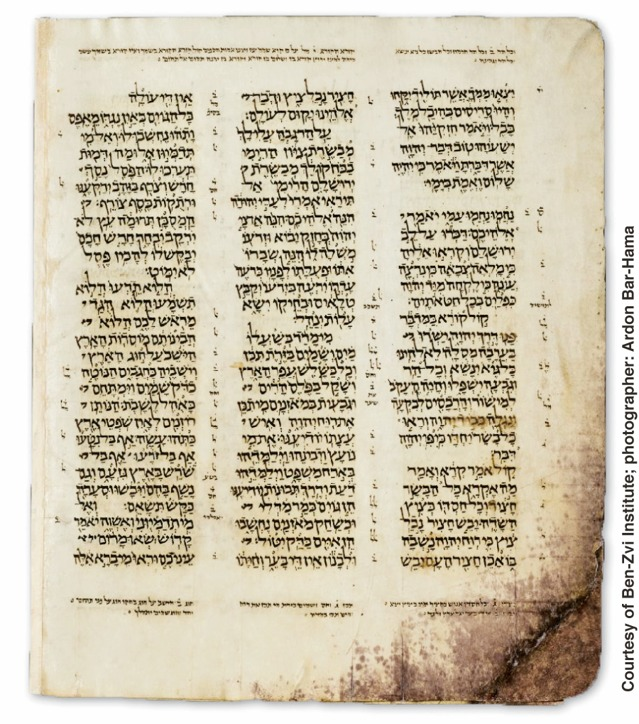
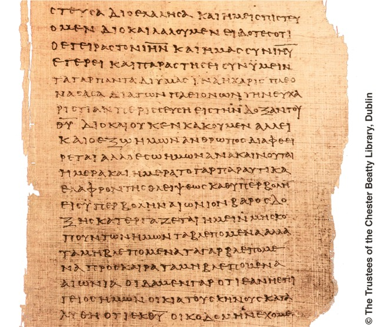

Capítulo 40 do livro de Isaías nos Rolos do Mar Morto (datado de 125 a 100 AEC)
Quando comparado com manuscritos hebraicos de cerca de mil anos mais tarde, encontraram-se somente pequenas diferenças, a maioria na grafia

Capítulo 40 do livro de Isaías no Códice de Alepo, um importante manuscrito hebraico massorético de cerca de 930 EC
Texto hebraico: A Tradução do Novo Mundo das Escrituras Hebraicas (1953-1960, em inglês) foi baseada na Biblia Hebraica, de Rudolf Kittel. Desde então, edições atualizadas do texto hebraico, como a Biblia Hebraica Stuttgartensia e a Biblia Hebraica Quinta, incluíram pesquisas recentes com base nos Rolos do Mar Morto e em outros manuscritos antigos. Essas obras eruditas reproduzem o Códice de Leningrado e incluem notas com textos comparativos de outras fontes, como o Pentateuco samaritano, os Rolos do Mar Morto, a Septuaginta grega, o Targum Aramaico, a Vulgata latina e a Pesito siríaca. As edições da Biblia Hebraica Stuttgartensia e da Biblia Hebraica Quinta foram consultadas na preparação da atual revisão da Tradução do Novo Mundo.
Texto grego: No final do século 19, os eruditos B. F. Westcott e F.J.A. Hort compararam manuscritos e fragmentos existentes da Bíblia na preparação de um texto grego padrão que eles acreditavam refletir fielmente os escritos originais. Na metade do século 20, a Comissão da Tradução do Novo Mundo da Bíblia usou o texto-padrão desses eruditos como base para sua tradução. Foram usados também outros papiros antigos, provavelmente datados do segundo e do terceiro séculos EC. Desde então, mais papiros ficaram disponíveis. Além disso, textos-padrão como os de Nestle e Aland e das Sociedades Bíblicas Unidas refletem pesquisas recentes de eruditos. Algumas das descobertas dessas pesquisas foram incluídas nesta revisão da Bíblia.
Com base nesses textos-padrão, fica claro que alguns versículos das Escrituras Gregas Cristãs encontrados em traduções mais antigas, como a tradução Almeida, foram, na verdade, acréscimos feitos posteriormente por copistas e nunca fizeram parte das Escrituras inspiradas. No entanto, visto que a divisão dos versículos normalmente aceita em traduções da Bíblia foi determinada no século 16, a omissão desses versículos deixa lacunas na numeração de versículos de muitas Bíblias. Os textos são Mateus 17:21; 18:11; 23:14; Marcos 7:16; 9:44, 46; 11:26; 15:28; Lucas 17:36; 23:17; João 5:4; Atos 8:37; 15:34; 24:7; 28:29 e Romanos 16:24. Nesta edição revisada, esses versículos omitidos são indicados por uma nota no local da omissão.
Sobre a conclusão longa de Marcos 16 (versículos 9-20) e a conclusão curta desse capítulo, bem como a fraseologia de João 7:53–8:11, está claro que nenhum desses versículos fazia parte dos manuscritos originais. Por isso, esses textos espúrios, ou seja, que não pertenciam ao texto original, não foram incluídos nesta revisão.
Em alguns lugares, a fraseologia também foi ajustada para incorporar o que eruditos geralmente aceitam como o reflexo mais autêntico dos escritos originais. Por exemplo, de acordo com alguns manuscritos, Mateus 7:13 diz: “Entrem pelo portão estreito, porque largo é o portão e espaçosa é a estrada que conduz à destruição.” Em edições anteriores da Tradução do Novo Mundo, a expressão “é o portão” não foi incluída no texto. No entanto, estudos posteriores dos manuscritos levaram à conclusão de que a expressão “é o portão” estava no texto original. Assim, ela foi incluída nesta edição revisada. Muitos refinamentos similares foram feitos. Mas esses ajustes são pequenos e nenhum deles muda a mensagem básica da Palavra de Deus.
